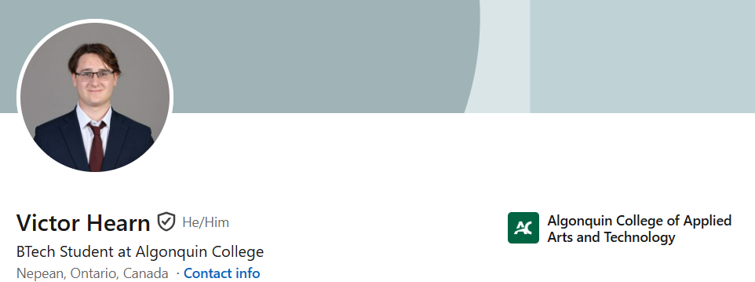

2 Ararat Court, Ottawa, Ontario, K2H 8R9
613-882-7992
hearnvictor@gmail.com

Bilingual (English/French) student with diverse experience in customer service, manual labor, and team leadership. Known for reliability, strong work ethic, and effective communication. Demonstrates physical endurance, adaptability in fast-paced environments, and dedication to high-quality service. Government of Canada Secret Clearance valid until 2032.